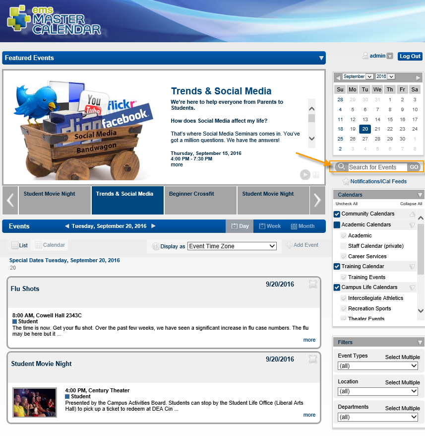

Search for an Event or Special Date
- On the Master Calendar main menu, click Search. The Search page opens. This page contains all the fields that you use to specify the search criteria. It also contains a list of all calendars to which you have access either as a guest or user.

- In the search results that appear, filter your search criteria.

- Click Go to apply your filters. Event search results are grouped by event date, location, and calendar. Special date search results are grouped by event date, title, notes and calendar.
See Also: Export Search Results.